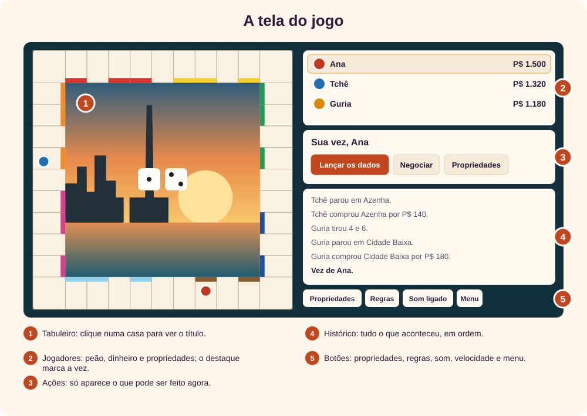
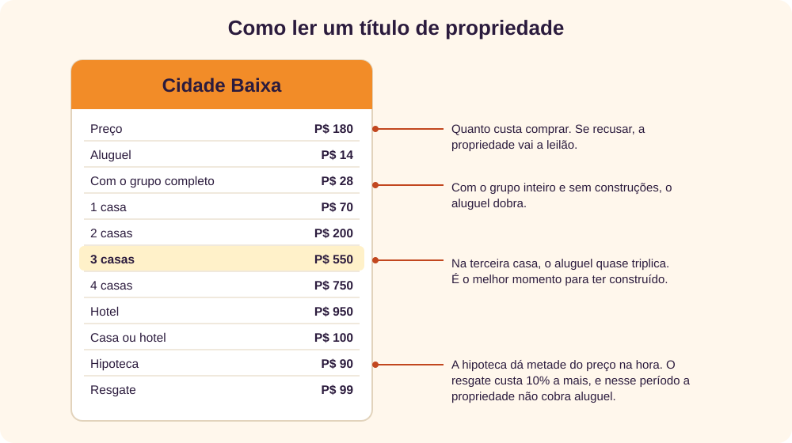
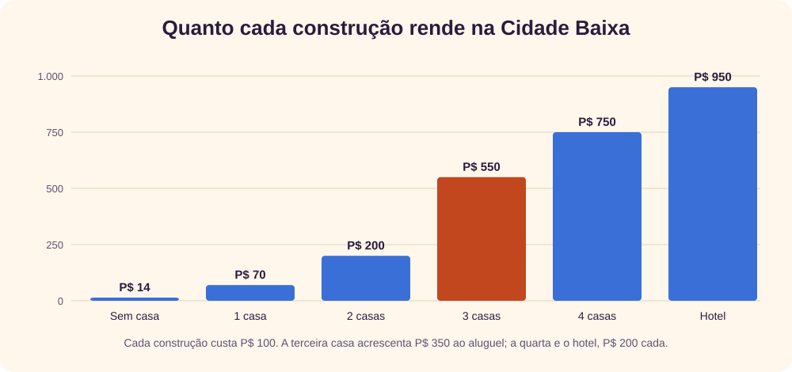
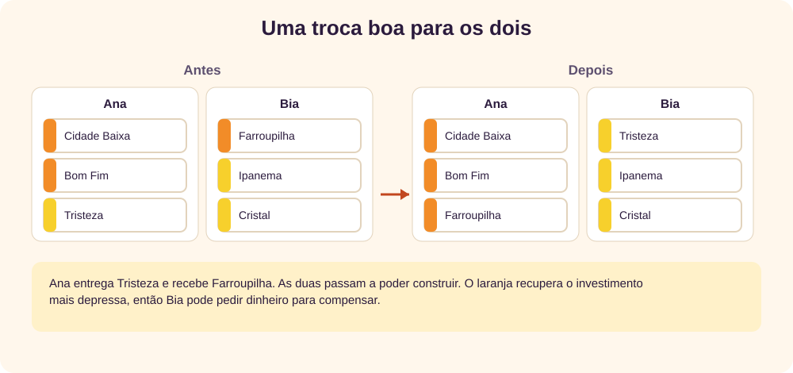
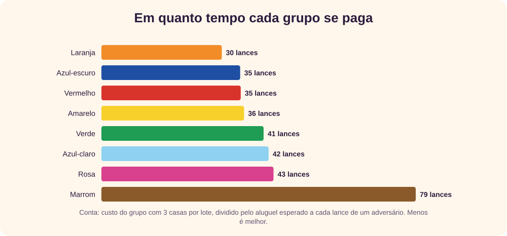
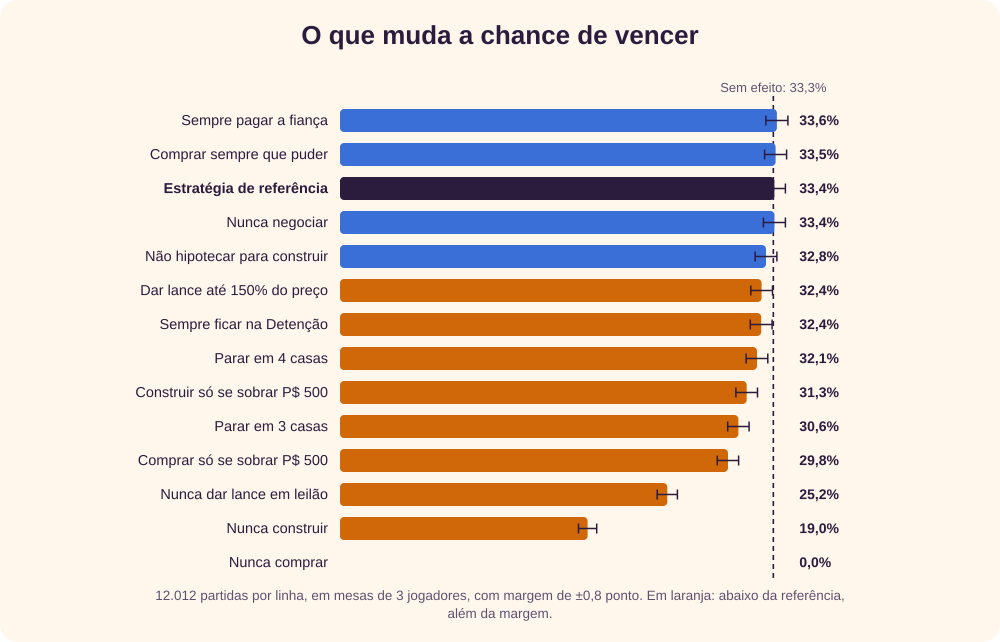

O jogo
Porto Alegre em Jogo é um jogo de negócios imobiliários, da mesma família de Monopoly e Banco Imobiliário, [3] ambientado na capital gaúcha. Você compra bairros, cobra aluguel de quem para neles, constrói casas e hotéis e negocia com os outros jogadores. Vence quem sobrar depois que os demais falirem, ou o maior patrimônio ao fim das rodadas, se a partida tiver limite. [1]
A moeda é o pila (P$), e cada jogador começa com P$ 1.500. A cidade está em toda parte: os baralhos se chamam Minuano e Chimarrão, os transportes são o trem, a rodoviária, o aeroporto e o catamarã, e uma das companhias é a Usina do Gasômetro, inaugurada em 1928 como termelétrica. [2]
↑ Voltar ao topoPreparando a partida
No menu, monte a mesa com 2 a 6 jogadores. Cada linha tem um peão, um nome e o tipo: pessoa ou computador. Pessoas jogam no mesmo aparelho, passando a vez.
- Duração: “Até sobrar um” é a partida completa. Com 15 ou 30 rodadas, o jogo termina no limite e vence o maior patrimônio, somando dinheiro, propriedades e construções. Para uma primeira partida, 15 rodadas bastam.
- Computador: Fácil, Médio ou Difícil. Mesmo o Difícil não adivinha os dados: ele só escolhe melhor o que fazer com eles.
| Confronto | Partidas | Vitórias do mais forte |
|---|---|---|
| Médio contra dois Fáceis | 4.000 | 69,4% |
| Difícil contra dois Médios | 4.000 | 69,0% |
| Difícil contra dois Fáceis | 4.000 | 73,5% |
Numa mesa de 3 sem vantagem para ninguém, cada um venceria 33,3%. Quem joga primeiro é sorteado. Com 4 computadores iguais, quem começou venceu 28,3% das vezes, e quem jogou por último, 21,7%: sair na frente ajuda um pouco, porque compra antes.
↑ Voltar ao topoA tela

O painel de ações é o centro do jogo: mostra só o que você pode fazer agora. Quando é a vez do computador, ele avisa que está pensando, e o histórico registra cada passo.
| Botão | O que faz |
|---|---|
| Lançar os dados | Começa o movimento da vez. |
| Comprar por… / Leiloar | Aparecem quando você para numa propriedade sem dono. |
| Encerrar a vez | Passa a vez ao próximo jogador. |
| Negociar | Abre a proposta de troca com outro jogador. |
| Propriedades | Lista o que é seu, com construir, vender, hipotecar e resgatar. |
| Regras, Som, Velocidade, Menu | Consulta, ajustes e volta ao menu. A partida fica salva. |
Bairros com construções mostram casas verdes ou um hotel vermelho na faixa de cor. O ponto colorido indica o dono, e o fundo listrado indica hipoteca. No celular, os nomes são abreviados: toque na casa para ver o nome completo.
↑ Voltar ao topoSua vez, passo a passo
- Antes de lançar, você pode construir, hipotecar ou negociar. Na sua vez, e só nela.
- Lance os dados e o peão anda sozinho. Ao passar pelo Largo Glênio Peres, você recebe P$ 200.
- A casa decide o que acontece: propriedade, carta, imposto, descanso ou Detenção.
- Com dupla, você joga de novo depois de resolver a casa. Na terceira dupla seguida, vai direto para a Detenção.
- Encerre a vez quando terminar.
As cartas Minuano trazem mais deslocamentos pela cidade, e as Chimarrão, mais dinheiro e despesas. As duas têm uma carta de saída da Detenção, que pode ser guardada e negociada.
↑ Voltar ao topoComprar e leiloar
Ao parar numa propriedade sem dono, você escolhe entre Comprar pelo preço e Leiloar. Se faltar dinheiro, ainda pode hipotecar algo antes de decidir.
No leilão, cada jogador, inclusive você, dá um lance maior ou desiste. Os botões somam P$ 10, 50 ou 100 ao maior lance. Quem sobrar leva a propriedade pelo próprio lance, mesmo abaixo do preço. Se ninguém der lance, ela segue sem dono.
↑ Voltar ao topoAluguel
Quem para em propriedade de outro paga aluguel na hora. Preso também cobra; só a hipoteca suspende a cobrança.

- Bairros: o aluguel dobra quando o dono tem o grupo inteiro, mesmo sem casas, e cresce muito com as construções.
- Transportes: P$ 25, 50, 100 ou 200, conforme quantos dos 4 o dono possui.
- Companhias: 4 vezes os dados com uma, 10 vezes com as duas.
Construir
Para construir, você precisa do grupo de cores inteiro, sem nenhum lote hipotecado. Use Propriedades e construa por igual: um lote só recebe a próxima casa quando os outros do grupo têm a mesma quantidade. Depois de 4 casas vem o hotel.

O banco tem só 32 casas e 12 hotéis. Quando as casas acabam, ninguém mais constrói até alguém devolver. Trocar 4 casas por um hotel devolve casas ao banco; ficar com muitas casas, ao contrário, as tira dos adversários.
↑ Voltar ao topoFalta de dinheiro
Se uma conta for maior do que o seu dinheiro, a partida para até você resolver. O painel mostra quanto falta, e o pagamento sai sozinho assim que houver dinheiro.
- Vender construções: o banco paga metade do custo, e as construções saem por igual.
- Hipotecar: recebe metade do preço. O grupo precisa estar sem construções. Para resgatar, paga 10% a mais.
- Declarar falência: se não houver mais o que fazer, você sai da partida. Se a dívida for com um jogador, ele recebe tudo o que é seu, e as construções viram dinheiro pela metade do custo. Se for com o banco, as propriedades vão a leilão.
Detenção
Você vai para a Detenção ao parar em “Vá para a Detenção”, por certas cartas ou com três duplas seguidas. Sem passar pelo Largo e sem receber os P$ 200. Quem só para na casa está de visita e não sofre nada.
Preso, em cada vez você escolhe entre pagar P$ 50, usar a carta de saída ou tentar uma dupla. A dupla solta e move o peão, mas não dá nova jogada. Na terceira falha, a fiança é obrigatória e você anda com o resultado dos dados.
| Situação | O que fazer |
|---|---|
| No começo, com muitas propriedades livres | Saia logo: pague ou use a carta para continuar comprando. |
| No fim, com o tabuleiro cheio de construções | Fique e tente a dupla: preso, você não paga aluguel, mas continua cobrando. |
| Com pouco dinheiro | Tente a dupla. Na terceira falha, a fiança será cobrada de qualquer forma. |
Em todos esses casos, a diferença medida foi pequena: sempre pagar rendeu 33,6% de vitórias, e sempre ficar, 32,4%, com margem de ±0,8 ponto.
↑ Voltar ao topoNegociar
Na sua vez, Negociar abre a proposta: escolha o jogador, marque as propriedades de cada lado e informe dinheiro e cartas de saída. O outro lado aceita ou recusa. Grupos com construções ficam de fora: venda as construções antes. Quem recebe propriedade hipotecada paga 10% de juros na hora.

O computador Médio e o Difícil também podem fazer ofertas por um lote que lhes falta. Antes de aceitar, olhe o que aquela oferta libera para ele: vender o último lote de um grupo costuma custar mais do que parece.
↑ Voltar ao topoO que dizem os números
Testei cada conselho com o próprio motor do jogo, em vez de só repeti-lo. Há três tipos de números aqui: os valores do jogo são exatos, a frequência das casas vem de 8.008 partidas simuladas, e as estratégias vêm de um experimento em que um jogador muda uma única decisão.
A Detenção recebe 5,8% das paradas, mais do que o dobro de uma casa comum. Como muitos peões saem dela, os bairros a poucos dados de distância recebem mais visitas. Daí a fama do laranja.

| Grupo | Custo com 3 casas | Retorno com 3 casas | Retorno com hotel |
|---|---|---|---|
| Marrom | P$ 420 | 79 | 45 |
| Azul-claro | P$ 770 | 42 | 29 |
| Rosa | P$ 1.340 | 43 | 37 |
| Laranja | P$ 1.460 | 30 | 25 |
| Vermelho | P$ 2.030 | 35 | 34 |
| Amarelo | P$ 2.150 | 36 | 36 |
| Verde | P$ 2.720 | 41 | 42 |
| Azul-escuro | P$ 1.950 | 35 | 35 |
O marrom custa pouco, mas demora a se pagar. Laranja e azul-claro são os que mais rendem pelo dinheiro investido quando chegam ao hotel. Já o verde custa caro e não supera o azul-escuro.

Estratégias
Compre quase tudo no começo
Nunca comprar derrubou a vitória a 0,0%, e só comprar quando sobravam P$ 500 caiu para 29,8%. Propriedade é o que gera renda e o que se negocia depois. Nas primeiras voltas, ter pouco dinheiro incomoda menos do que ter pouco tabuleiro.
Não desista dos leilões
Nunca dar lance reduziu a vitória a 25,2%, um dos maiores efeitos do teste. Já pagar até 150% do preço custou pouco (32,4%). Em dúvida, dispute, sobretudo se o lote completa um grupo seu ou impede um grupo alheio.
Construa, e não pare na terceira casa
Nunca construir derrubou a vitória a 19,0%. A terceira casa é o melhor salto de aluguel, mas parar nela rendeu 30,6%, abaixo de seguir até a quarta casa (32,1%) ou até o hotel (33,4%). Vá a 3 casas em todos os lotes primeiro; depois, continue.
Não guarde dinheiro demais
Só construir com P$ 500 de sobra custou 2 pontos (31,3%). Dinheiro parado não cobra aluguel. Olhe as próximas 12 casas: guarde o bastante para o pior aluguel ao alcance e invista o resto.
Hipotecar para construir é opcional
Hipotecar propriedades soltas para financiar casas é uma jogada conhecida, mas não fazê-la quase não mudou o resultado (32,8%, dentro da margem). Use quando faltar pouco para a terceira casa, não como regra.
Atenção aos transportes
Os 4 transportes renderam 23% de todo o aluguel pago nas simulações, mais do que qualquer grupo de cores: não exigem construção e têm casas muito visitadas. Com poucos grupos completos na mesa, são uma renda estável.
Numa mesa de pessoas, negocie
Sem grupo não há construção, e sem construção o aluguel fica baixo. Se a mesa empacar, proponha uma troca em que os dois completem grupos, ou pague bem pelo lote que falta. Grupos baratos completos valem mais do que lotes caros soltos.
↑ Voltar ao topoDicas rápidas
- Clique na casa antes de comprar ou dar lance: o título mostra quanto ela rende.
- Antes de encerrar a vez, abra Propriedades. Muita gente esquece de construir.
- Use a velocidade rápida para partidas contra o computador.
- Partidas de 15 rodadas favorecem quem já tem patrimônio: construa cedo e evite vender barato no fim.
- Com a carta de saída, espere: ela também serve como moeda em negociações.
- Lote hipotecado não cobra aluguel. Resgate os do grupo antes de construir.
- Para treinar, jogue contra o Médio. Quando vencer com folga, passe ao Difícil.
Revisão rápida
1. Quanto se recebe ao passar pelo Largo Glênio Peres?
P$ 200.
2. O que é preciso para construir uma casa?
Ter o grupo de cores inteiro, sem lote hipotecado, construindo por igual e na sua vez.
3. Recusei a compra. E agora?
A propriedade vai a leilão, aberto a todos, inclusive a você.
4. Quem está preso cobra aluguel?
Sim. Só a hipoteca suspende a cobrança.
5. Qual estratégia mais derrubou as vitórias nos testes, depois de nunca comprar?
Nunca construir: 19,0%, contra uma referência de 33,3%.
6. Quanto custa resgatar uma hipoteca?
O valor recebido mais 10%.
Referências
- Giovani Perotto Mesquita, “Porto Alegre em Jogo”, jogo interativo, giovanipm.github.io/PortoAlegreEmJogo.html. Simulações próprias feitas com o motor deste jogo em 31/10/2026.
- Wikipedia (em inglês), “Usina do Gasômetro”, en.wikipedia.org/wiki/Usina_do_Gasômetro, acesso em 31/10/2026.
- Estado de Minas, “Hasbro e Estrela: disputa judicial sobre Monopoly e Banco Imobiliário”, 02/06/2023, em.com.br, acesso em 31/10/2026.